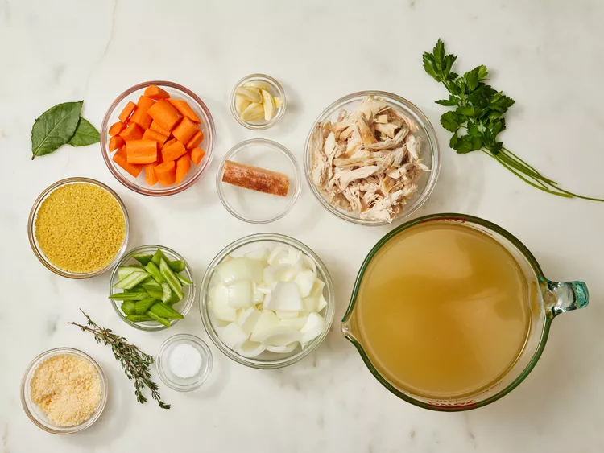
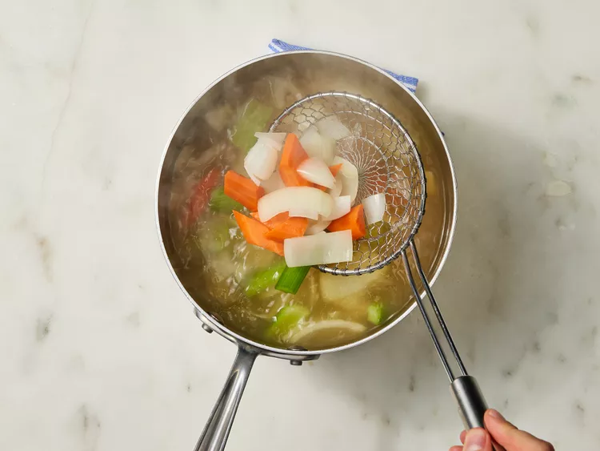
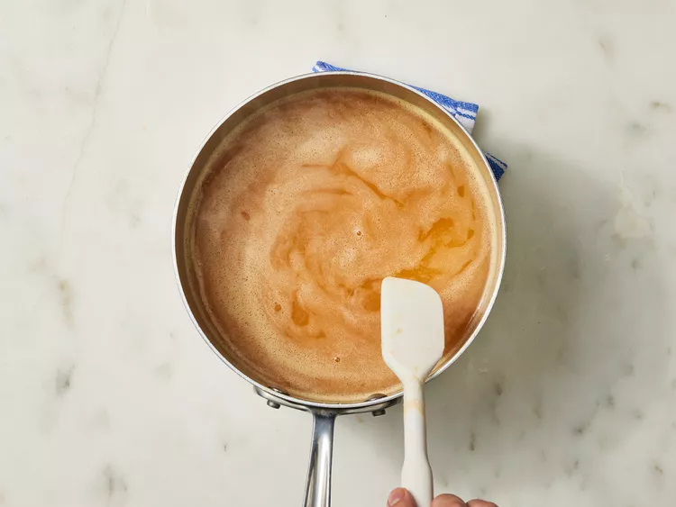
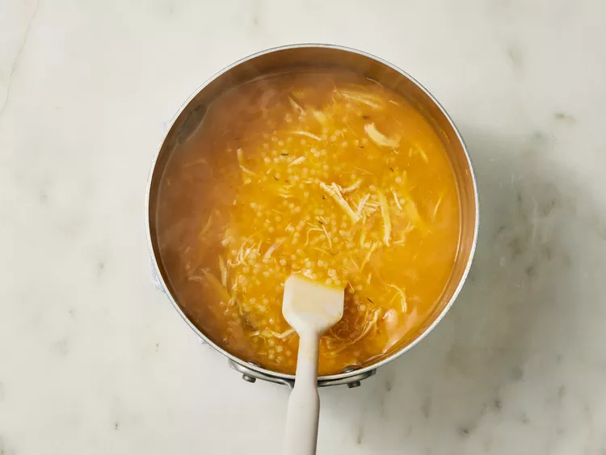
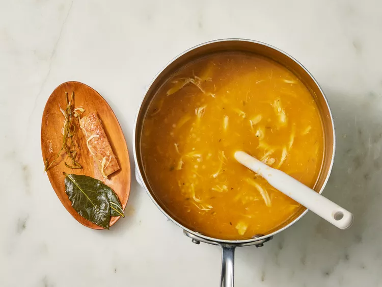
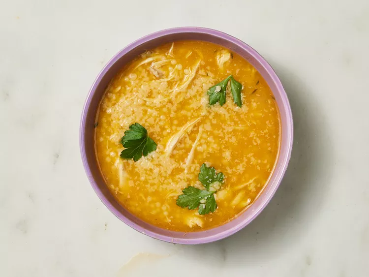

Sometimes, the best remedy for a cold—or just a long day—is a steaming bowl of soup. Enter Italian Penicillin Soup, lovingly known as Sick Day Soup or Chicken Pastina Soup. While it might not come with a doctor's seal of approval, this rich, aromatic dish is the ultimate comfort on a chilly day, offering a perfect blend of tradition and ease.
What sets this apart from standard chicken noodle soup? The simmered vegetables are blended and stirred back into the broth—a “genius” move that adds both body and complexity. Cooking the pastina directly in the broth thickens it just enough, while fresh herbs and a Parmesan rind elevate the flavor to something truly special.
“Honestly, this will be the only way I make chicken noodle soup from now on,” says recipe tester Amanda Holstein. Whether you're under the weather or just craving something cozy, this hearty soup is destined to become your cold-weather favorite.
Gather all ingredients
Bring broth, onion, carrots, celery, garlic, and salt to a boil in a large saucepan or small Dutch oven over high; reduce heat to medium-low, and simmer until vegetables are softened, about 10 minutes. Using a slotted spoon, transfer vegetables and 1 cup of broth to a blender.
Secure lid on blender, and remove center piece to allow steam to escape. Place a clean towel over opening. Process until smooth, about 30 seconds. Stir blended carrot mixture back into soup.
Add thyme sprigs, bay leaves, and Parmigiano-Reggiano cheese rind. Bring to a boil over medium-high. Add pasta, reduce heat to medium-low, and simmer, stirring occasionally, until pasta is tender, 18 to 20 minutes, adding shredded chicken in the last 3 minutes of cooking.
Remove from heat. Remove and discard thyme sprigs, bay leaves, and Parmigiano-Reggiano cheese rind.
Serve immediately, and garnish with parsley and grated Parmigiano-Reggiano.
For more soups check the one below